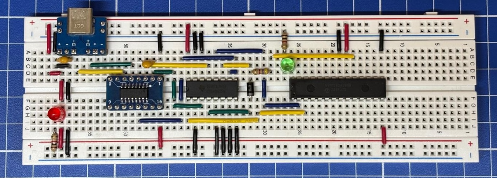
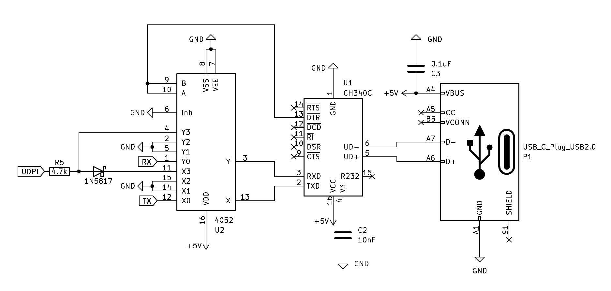

Serial + UPDI
Imaginate poder usar un solo circuito para Serial (USB Communications Device Class CDC) para comunicarte con el MCU y también poder programarlo usando el UPDI. Todo esto es posible gracias al CI 4052 que hace de interruptor y es controlado por el CI CH340.
Para el ejemplo que desarrollo en este escrito, utilizo el circuito descrito para programar un MCU de tipo AVR128DA28.

Esta idea la obtuve de MCS Electronics, ellos no usan avrdude y en el ejemplo usan un CI 4053. Al entender cómo funciona su solución hice los cambios más lógicos a mi parecer usando un 4052.
Es posible usar el mismo CI para tener las dos funciones, pero se necesita un CI adicional que haga de switch (4052) para ir alternando entre UART (donde está el CDC) y UPDI. Ambos circuitos serán controlados por el pin RTS (Request to Send) del CH340, cuando se pone el pin del RTS en alto/hight tambien pasara con los pines de conmutacion A y B del CI 4052 y se activa el modo “programmer” como lo llamo yo, y cuando el pin RTS esta en bajo/LOW los pines de control A y B tambien lo están y se activa el modo “data” o seríal para que nos podamos entender.

Componentes
- Un IC CH340.
- Un IC CD4052B.
- Condensador de 10nF.
- Condensador de 100nF / 0.1uF, Código: 104, Cantidad: 2.
- Resistencia de 4.7k.
- Diodo schottky 1N5817 (puede ser otro; BAT43).
Esquema
El CI 4052 permitirá usar un pin de control A y B en paralelo para redirigir la entrada TX y RX del CH340, al circuito de UPDI o a los pines del UART del MCU.
Warning
Se debe mantener el UART conectados a los pines X0 y Y0, y el UPDI a los pines X3 y Y3 del CI 4052. De esta forma funciona perfectamente, si invierte a pesar de que parezca lógico, NO funciona bien. Esto es debido a que se necesita interrumpir la comunicación del UART cuando necesitamos hacer uso del UPDI.

¿Cómo progamar usando el UPDI?
Debemos indicarle al avrdude que ponga el pin del RTS en alto/hight de la siguiente forma -x rtsdtr=hight.
|
|
¿Cómo usar el CDC?
Puedes usar los clientes CoolTerm o picocom, te lo dejo a gusto.
|
|
¿Cómo salir del picocom? Debes presionar la siguiente combinación de teclas: Control + a y luego Control + x